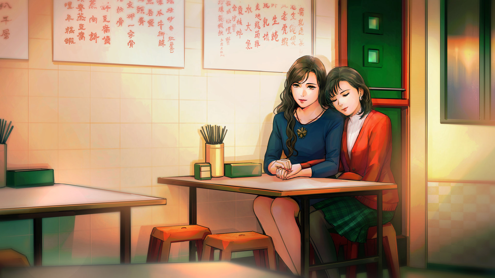
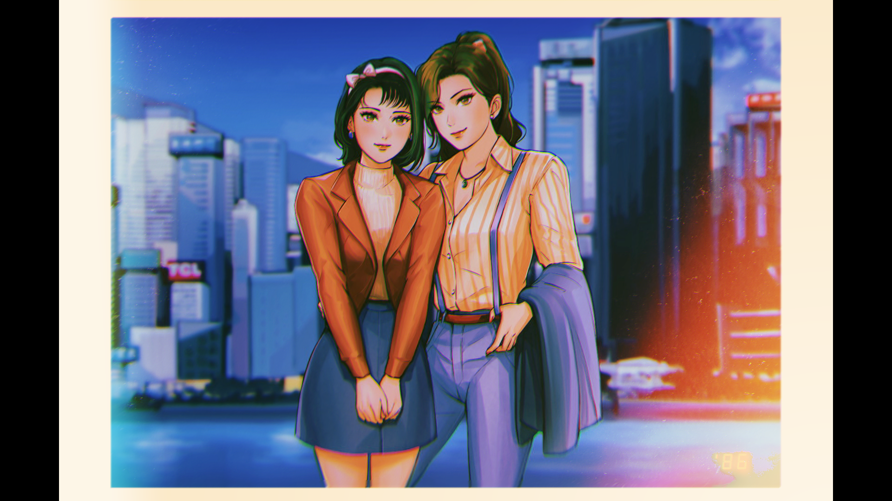
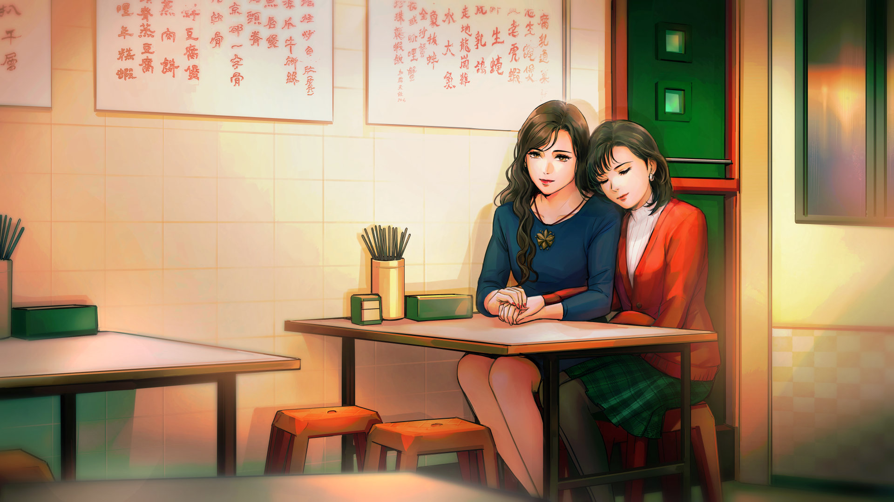
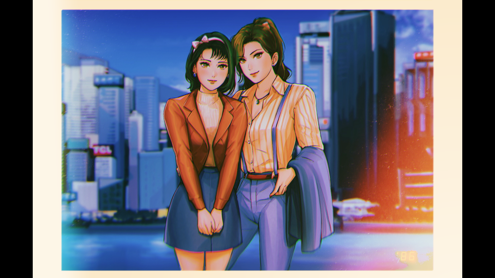

A Summer’s End — Hong Kong 1986 Gallery
A Summer’s End — Hong Kong 1986 was lovingly crafted by its developer Oracle and Bone with gorgeous art, so i want to make a page dedicated to my appreciation for the visual novel’s art.
I also highly recommend checking out the official site of A Summer's End and the social media accounts of Oracle and Bone's for more beauriful art about the visual novel!
In-Game Screenshots


 


